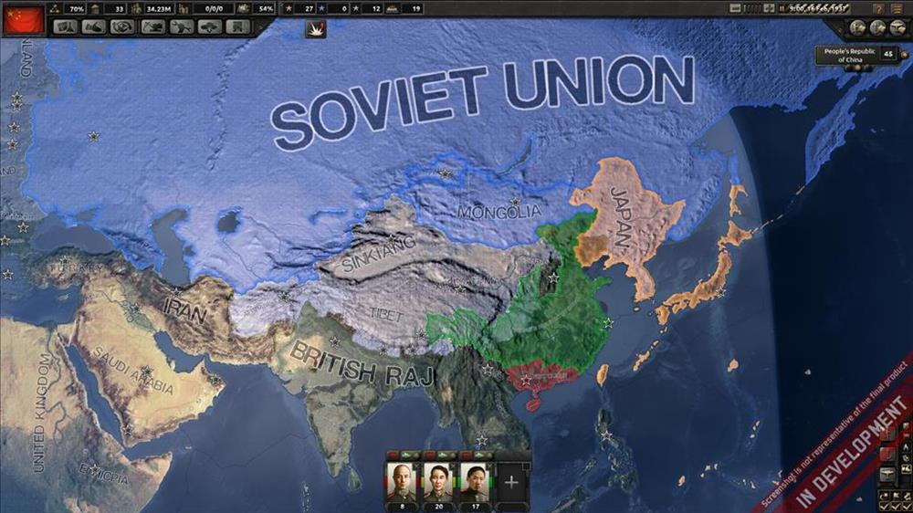

Hearts of Iron 4 is a grand strategy wargame developed by Paradox Development Studio and published by Paradox Interactive. This community wiki's goal is to be a repository of Hearts of Iron IV related knowledge, useful for both new and experienced players and for modders.
It ia the game that Our club played the most because It can simulate Warfare.